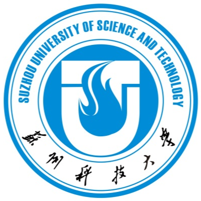

About Me
Hello! 大家好！我是 宋泽荣，欢迎来到我的个人主页。
我目前在河海大学测绘与遥感专业攻读硕士学位，研究方向为 GNSS 与多源遥感数据融合处理。熟练使用 MATLAB、Python、C++、JavaScript 等编程语言，并掌握 Vue3、Figma、Visio、AutoCAD 等工具，具备产品设计与数据处理的综合能力。
我具备科研与 企业级AGENT 项目的实践经验，熟悉从需求分析、方案设计、技术验证到产品落地的流程，能够高效协同研发、运营等团队。日常深度使用 ChatGPT、Claude 等大语言模型，并具备 AI 辅助开发经验，能够基于 LLM 构建 Agent 与 Skills 来提升工作效率。英语具备较强的口语交流和书面表达能力。
教育经历
河海大学
学历：硕士研究生
专业：资源与环境
研究方向：GNSS多源遥感
GPA：3.5 / 5.0
排名：前10%
所在地：江苏 南京

苏州科技大学
学历：学士
专业：测绘工程
GPA：3.2 / 5.0
排名：前10%
所在地：江苏 苏州
实习经历
江苏北斗卫星产业技术研究院
- 参与toC无人机飞行管理平台前端模块开发，基于Vue3、Element Plus与Axios完成飞行任务、飞手管理、轨迹可视化等模块开发，参与系统功能设计与业务流程实现。
- 参与toB交通拥堵可视化分析平台开发，使用Figma参与页面设计与交互优化，并基于ECharts实现流量、拥堵指数等数据动态可视化，提升信息展示效率。
- 参与项目研讨会以及技术研讨会，梳理核心需求、设计多 Agent 协作方案、参与AB测试及效果评估；参与 RAG 优化，调整文本分块、Embedding 与 Reranking 策略，参与编写 Agent 流程与系统技术文档，确保项目可维护性和交付质量。
江苏省地质局
- 参与地铁隧道结构健康监测项目，负责GNSS监测点周期性观测、数据采集及内业数据处理，开展监测数据质量检查、病害识别与风险评估。
- 参与部门本地大模型应用项目从立项到落地的全流程，协助梳理业务需求并设计本地化部署方案，使用 Ollama 部署本地开源模型，基于 FastAPI 封装模型调用接口；设计 Pydantic + JSON Schema 的结构化输出与结果校验机制，提升输出稳定性；推动 Llama、Phi、Mistral 三类模型开展统一测试，形成模型选型分析并推进方案落地。
项目经历
多 Agent 协作的智能无人机任务管理平台
- 该项目采用多 Agent 协作架构，包含任务分类 Agent、检索 Agent、预约 Agent和 User Behavior Agent。任务分类 Agent负责理解用户意图，并根据需求调用下层三个 Agent；检索 Agent内置RAG，负责知识问答与信息检索；预约 Agent智能检测空闲无人机和飞手，并完成匹配排期；User Behavior Agent学习并记录不同飞手及不同类型任务的偏好，为后续任务分配和调度提供依据。
- 作为实习产品经理，参与项目从立项调研、需求分析、方案设计、可行性验证、研发推动、上线前测试到落地使用的全流程，梳理核心业务流程，参与设计系统分层架构及四类 Agent 的协作机制，并协调研发推进功能落地；作为实习 Agent 工程师，参与 consultation_agent.py 开发，基于 RAG 实现知识检索与问答功能，并参与文本分块、Embedding、Reranking 等链路优化及相关技术文档编写。
科研经历
GNSS-based drought propagation analysis in the western United States
- 围绕GNSS及多源遥感数据开展建模分析与融合研究，完成数据处理、技术验证及算法改进等科研工作。
- 负责科研项目全流程设计与实施，完成任务拆解、技术方案与实验设计、代码开发以及结果验证的全过程。基于Claude进行Prompt Coding，使用MATLAB、Python开展多源数据处理、指标计算、模型构建及结果分析，提升数据处理与算法开发效率。
学生职务
院学生会 副主席
- 定期组织项目例会，协调多部门成员沟通协作，收集13条流程优化建议并推动落地；统筹3项大型活动（累计参与人数500+），负责需求梳理、方案制定、流程推进及节点验收，协调人员场地等资源，建立标准化SOP并完成活动交付。
- 担任“重走党建征程路，追溯红色主旋律”社会实践活动主要负责人，负责明确项目目标与任务要求，拆解项目任务及实施流程，制定执行方案与验收标准，协调项目成员推进实践活动实施，完成调研数据汇总、项目验收及成果展示。
获奖情况
学科竞赛
奖学金
其他奖励